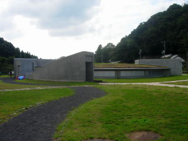
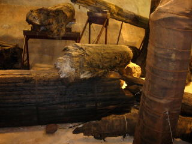
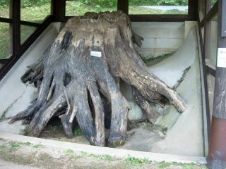
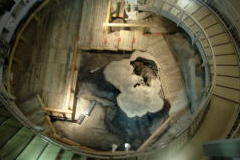

三瓶小豆原埋没林もお客さんが多かったです。
2010/09/19
ここには何回か来た事があったんですが、今日がいままでで一番人が多かったです。
駐車場待ちの車までいました。

この建物の中に巨大地底林が入っています。

巨大な木が立ってたり、横たわっていて、発掘現場っぽい雰囲気がいいですね。

屋外にも展示があります。
島根県大田市三瓶町多根ロ58-2
2010/09/19
ここには何回か来た事があったんですが、今日がいままでで一番人が多かったです。
駐車場待ちの車までいました。

この建物の中に巨大地底林が入っています。

巨大な木が立ってたり、横たわっていて、発掘現場っぽい雰囲気がいいですね。

屋外にも展示があります。
チケットをいただいたのでまた見に行きました。2回目なので、最初に見た時のようなインパクトはもう無かったです。
「ちょっと前より古くなったかな？」っていうのが正直な感想です。
「縄文の森発掘保存展示棟」がメインで、その脇に「合体木根株展示棟」があるんですが、「合体」の方はエレベーターがないので、あまり人がいませんでした。

でもこっちのほうが間近で木が見れるのでお勧めです。
2006/09/24
約3500年前の三瓶山の噴火で、地下に埋まってしまった林が見れるのってちょっとビックリですね。しかも掘り起こして展示するんじゃなくて、地下を掘って現状維持みたいに展示してあるので、とてもリアルな感じがいいです。
地下なのでシェルターみたいで、「こんな施設初めて入った」的な感じがするのも面白くて良かったです。
木には保護のために液体が着いてて触らないほうがいいみたいなんですけど、触れる距離で展示してありました。（私は触りました）
古いものなんですが、ちゃんと年輪までしっかり解かり「へーこれが3500年前のモノなの？」ってくらい保存状態が良かったです。
2度3度行くような所ではない気がしますが、1度は行ってみてもいい施設ですね。